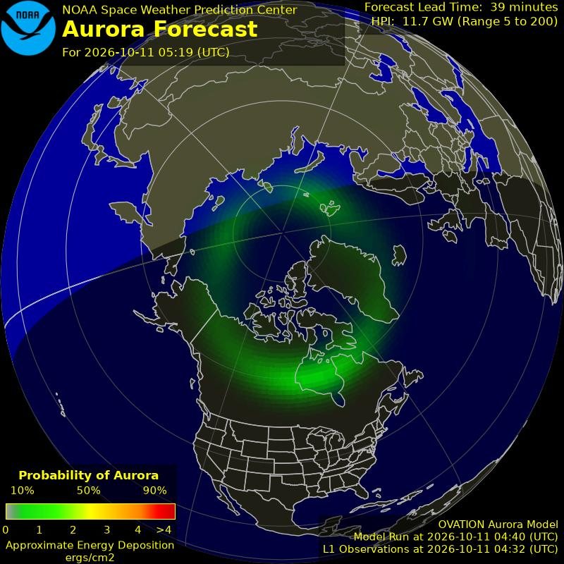

🗺️ National products
🌌 Aurora & space weather (NOAA SWPC)

🌧️ WPC charts

🗣️ WPC forecast discussions
📝 Short Range (Days 1-2)
...Post Tropical Isaias will bring widespread rainfall across the Eastern states...
...Moisture from Tropical Storm Rachel will bring heavy rain and flash flooding to the southwestern U.S. through Monday...
...First winter storm of the season forecast for the Northern Rockies this weekend...
An active weather pattern will be in place across the Continental U.S. through the remainder of the weekend and into Monday. What is now Post Tropical Isaias is currently tracking north across Alabama, and is bringing widespread rainfall from the Mississippi River eastward to the central Appalachians and the southeast coast, with drier conditions returning to the central Gulf Coast region after torrential rain and high winds. The heaviest rainfall over the next two days is expected to be across the southern and central Appalachians, particularly on southeast facing terrain where orographic ascent will be enhanced with the potential for 2-4 inch rainfall totals with isolated higher amounts possible that may result in some flooding, along with high winds across the higher ridges. A secondary maxima of heavy rain is also expected near coastal North Carolina.
Heavy rainfall and flash flooding will also make weather headlines across the western U.S. as the future remnants of what is now Tropical Storm Rachel move inland across the Desert Southwest. A Moderate Risk of excessive rainfall is valid from southern California to southern Utah where an enhanced corridor of heavier rainfall is expected to develop. The potential exists for rainfall totals to exceed three inches across the higher terrain of the Peninsular Ranges and into southeastern Nevada and the southern Wasatch Range, and generally 1-2 inches for the lower elevations. This could easily result in some instances of flash flooding. Farther to the north across Montana, it will be much colder north of the frontal boundary, and the incoming moisture should mainly be in the form of snow across the higher terrain of central and western Montana, with some areas possibly getting over a foot of snowfall through Monday afternoon. Snow levels will be much higher across Idaho and Wyoming, limiting snowfall to the highest terrain.
A temperature dichotomy will exist across the country through Sunday and into Monday. Conditions will remain well above average over much of the central U.S. with widespread highs into the 80s and even lower 90s for the northern/central Plains into the Upper Midwest and 90s for the southern Plains. There will likely be some new daily record highs established as a result. The cold front in the West will bring much colder temperatures in the 40s to portions of the northern High Plains Sunday. For the East, highs will vary around average with relatively cooler temperatures in vicinity of the widespread clouds and rain associated with the remnants of Isaias. Forecast highs are generally in the 70s for the Southeast with 60s for the Northeast.
🌧️ Excessive Rainfall - Days 1-2
Day 1
Southeast/Mid-Atlantic/Southern Appalachians... Widespread heavy rains are likely to continue with Post-Tropical Cyclone Isaias through tonight/early Sunday morning. Heaviest rains likely into the upslope regions of the Southern Appalachians from northeast Georgia into the Upstate of South Carolina and western North Carolina. Strong upslope flow will support heavy precip totals in the 3-5"+ range across these areas, with maximum totals in the 6-10 inch range across far western NC into the Upstate of SC. Changes to the risk areas were confined to their western sides to account for areas where the heavy rain threat is waning.
To the south of the maximum upslope precip area...there continues to be potential for organized convection in the developing cold frontal band southeast of the surface center across northwestern FL as enough moisture, effective bulk shear, and instability remains to fuel organized convection. Hourly rain amounts to 3" are possible, though the thunderstorm area should be somewhat progressive. Additional 5" totals are possible.
Frictional convergence along the coast favors the potential for very heavy totals along the immediate northeast SC and NC coastal regions. Both the HREF and RRFS neighborhood probabilities are high for 2 and 3"+ totals, with isolated maximum values in excess of 5" possible.
...Southwest... PW values will be increasing towards 2" as moisture associated with Rachel is drawn northeastward. More concentrated precip areas likely after 0300 UTC as Rachel approaches the northern Baja/Southern CA coast and a more favorable right entrance jet region develops northeastward into the Great Basin. Probabilities of 2"+ through early Sunday morning are highest in far southern CA, where a Moderate Risk of flash flooding/excessive rainfall remains. Burn scars, dry washes/arroyos, and urban areas would be most at risk from the heavy rainfall expected.
Roth
Day 2 Valid 12Z Sun Oct 11 2026 - 12Z Mon Oct 12 2026
2030Z Update... Widespread coverage of heavy rainfall still on track from California into the Great Basin and Southwest US as anomalous deep moisture streams across the region. With comparable QPF amounts with previous amounts...only minor nudges were needed to the boundaries of the outlook areas. Elsewhere there may still be flooding concerns with the remnants of Isaias before it heads off- shore.
🌧️ Excessive Rainfall - Day 3
Day 3
2030Z Update... Few changes were needed to the previously-issued Excessive Rainfall Outlook.
Bann
Previously Issued Excessive Rainfall Discussion...
While the remnants of Rachel will have accelerated rapidly northeast day 2 away from the Southwest and Great Basin, a strong amplified mid to upper level trof will continue across the Great Basin into central to southern California. This will maintain above average PW values to the east of this upper trof from Southern California into the Southwest and Great Basin, although values will be lower than the day 1 and 2 time period. Model consensus is for additional moderate to heavy precip totals from northwest Arizona into eastern Nevada and much of Utah. While precip totals are much lower than the day 2 period, a slight risk was maintained from northwest Arizona into much of Utah along the Wasatch as there will likely be overlap of heavy rain areas day 2 with the potential day 3 moderate to heavy totals.
Oravec
Day 3 threat area: www.wpc.ncep.noaa.gov/qpf/99epoints.txt
🌧️ Excessive Rainfall - Days 4-5
Day 4 and Day 5
...Western U.S...
The previous discussion remains in good shape. Only adjustments were to expand the Marginal Risk into southern Arizona where anomalous moisture coupled with saturated soils could support a very localized flash flood threat. The rest of the western U.S. Day 4 threat areas remain on track.
Mullinax
---Previous Discussion---
Remnants from Rachel plus the influence of a mature upper level low centered over the Great Basin will maintain another active period with convection centered over the Mogollon Rim in AZ up through UT where the model consensus continues to depict scattered heavy convective prospects in-of the terrain and the valley areas to the north. The good news compared to previous periods is the remaining energy from Rachel will be diffuse by this juncture of the forecast, however the upper level progression just to the east will be plentiful in providing a continued ascent regime capable of maintaining a broad convective threat with locally heavy rainfall thanks to PWATs lingering between 1-2 standard deviations above normal. Considering the environment prior, this is progress to waining the worst of the flash flood threat that will ensue over the weekend. That said, antecedent soils may be pretty well- saturated by this point leading to perhaps a bit of an easier chance for flash flooding despite rates and expected rainfall accumulations being lower than previous periods. A broad MRGL risk remains over the interior west with an embedded SLGT still lingering over northwest AZ up through much of UT where the best mid and upper level forcing is progged for much of Tuesday before the threat finally ends heading into mid-week.
Kleebauer
...Southern High Plains into the Central Plains...
❄️ Heavy Snow & Icing
...Northern Rockies... Days 1-2...
Two rounds will combine for a notable first significant snow of the season for west-central Montana terrain and valley through Sunday night.
Ongoing banding over west-central Montana causes further dynamic cooling, lowering snow levels, and increasing snowfall rates through this evening. This banded situation then persists over west-central MT into Sunday morning. Rates lighten for midday Sunday before shortwave energy containing the remnants of Rachel shift up the Intermountain West, bringing broad coverage of snow across western Montana late Sunday afternoon through Sunday night.
Mid-level low over north-central Washington shifts south to interior Oregon tonight, stretching into a positively-tilted oval over Oregon/northern California through Monday. Broad southwesterly flow east of the low continues to transport moisture from the the subtropic Pacific ahead of Rachel. Those remnants will shift north over the Intermountain West Sunday and over Wyoming Sunday night. At the surface, low pressure centered over the Dakotas will continue to suppress south and east while ridging from Alberta brings cold air over western Montana through Sunday night.
12Z HREF mean hourly rates begin to exceed 1"/hr by 00Z in preferred orographic lift in the Flathead Range and the Big/Little Belt Mtns. The banding so far has been robust. That should continue and movement may be small through this evening. The snow level appears to be rapidly dropping to valley level, so again where the bands persist, significant snow will occur. Day 1, WPC snow probs for >6" are >80% along the eastern slopes of the Lewis and Flathead Ranges then east over the Belts, and 50-70% in the adjacent terrain down to around 3800ft MSL.
The cold air shifts south through the rest of western Montana through Sunday with additional snow bands developing down to the Wyoming border in the morning before tapering off through midday. This will be a heavy/wet snow and the WSSI continues to have some moderate impacts for Snow Load over the southern MT ranges for Day 2 and Snow Amount in west-central Montana for Day 1.
As the remnant moisture of Rachel is pulled across Wyoming Sunday, a jet streak will pass through the region and help invigorate broad coverage of snow over western MT with some embedded banding. Day 2 WPC snow probs for >6" Day 2 are >50% for most terrain in the west- central and southwestern Montana ranges including the Crazy, Red Lodge portion of the northern Absarokas, and Gallatin.
Over WY, snow levels will remain high in the deeper/milder moisture plume (around 10,000ft), so only the highest Absarokas and the Wind River Range will see snow. However, favorable flow and plenty of moisture will maximize snowfall in the highest terrain where 1-2 ft of snow is expected.
🛰️ WPC / OPC / SPC analysis charts - extended set
🎈 Upper-air analyses (SPC obswx)